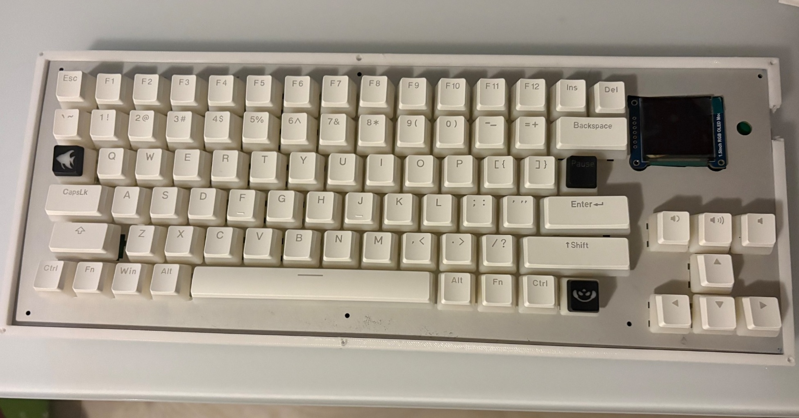
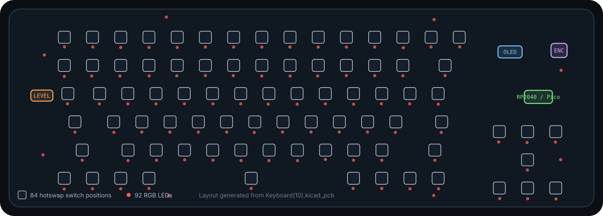
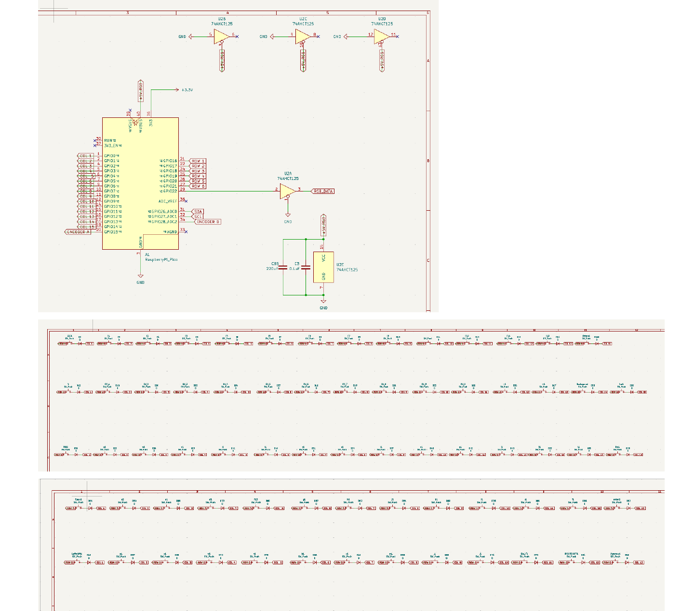
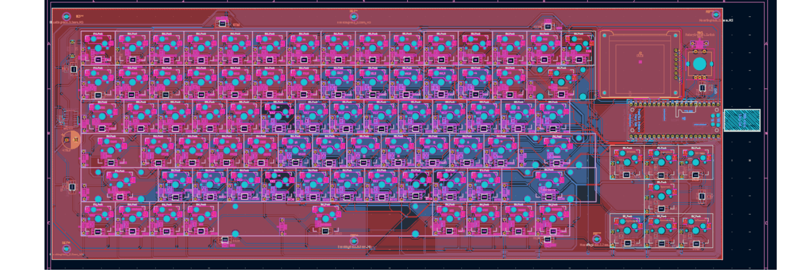
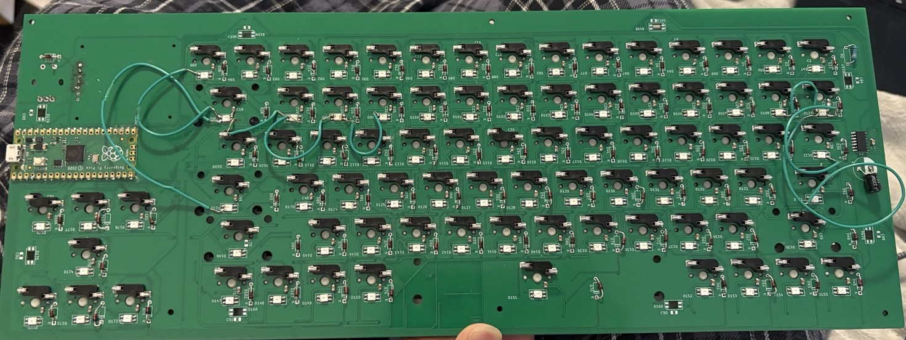
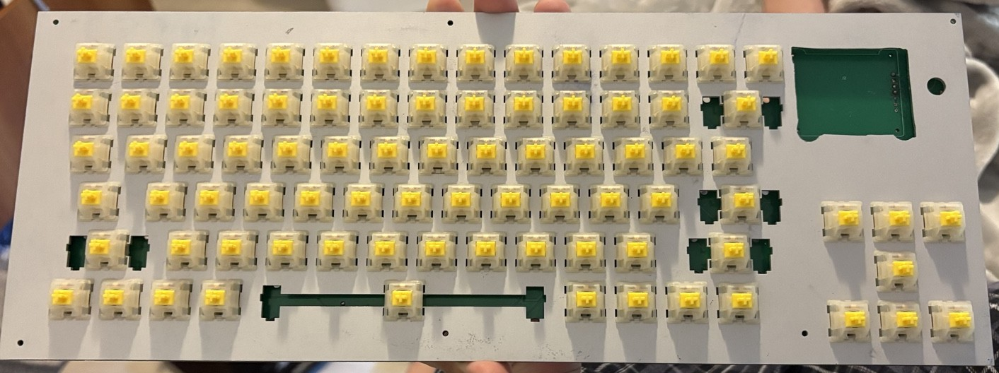
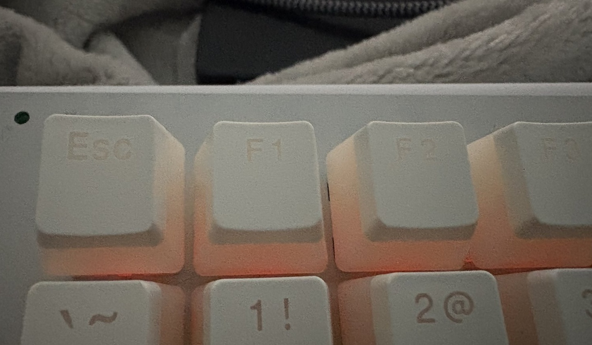
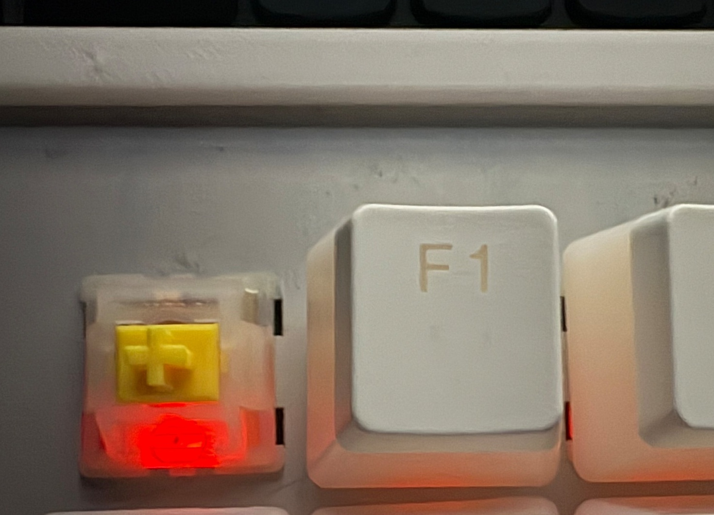

Idea
I had never designed a PCB before and wanted a project that would force me to learn the process from schematic to fabrication. I also needed a new keyboard, so I decided to build one around my own custom layout.
Mechanical keyboard built from the ground up with a custom layout spanning electrical design, PCB layout, embedded firmware, SolidWorks, and hardware debugging.

I had never designed a PCB before and wanted a project that would force me to learn the process from schematic to fabrication. I also needed a new keyboard, so I decided to build one around my own custom layout.
I learned how keyboard matrices work by progressing from a single-key schematic to a 2×2 matrix, then a full row and finally the complete keyboard. I added the OLED, per-key RGB, and rotary encoder, then cleared the schematic errors and warnings before moving on to PCB layout.
I assigned and created footprints, changed the matrix from 7×15 to 9×10 to free GPIO for the colour OLED, placed the switches, RGB LEDs and diodes, and routed the board in KiCad. I finished the layout with mounting holes and a ground copper pour before preparing it for fabrication.
I designed the enclosure in SolidWorks around the PCB and plate, adding screw bosses and mounting points for the top and bottom case. The case dimensions and top cover were iterated several times, and the final model included dedicated mounting bosses and clearance for the OLED.
I hand-soldered the capacitors, RGB LEDs, Kailh hot-swap sockets, controller, and supporting hardware. Assembly also required rework: one LED row was installed backwards, four copper pads were damaged during correction, and I repaired the affected connections with jumper wires.
The uploaded KiCad PCB contains 84 mechanical switch footprints, 92 reverse-mount SK6812MINI-E LEDs, a Raspberry Pi Pico footprint, OLED and rotary-encoder provisions, a 74AHCT125 level shifter, and six M2 mounting holes.

Keyboard(10).kicad_pcb. Red points show the RGB devices and white outlines show the 84 switch locations.The controller provides enough GPIO for the matrix while also handling USB HID and the addressable RGB data stream.
The PCB carries 92 SK6812MINI-E devices: 84 aligned with the switches plus additional auxiliary lighting positions.




QMK scans the 9 × 10 switch matrix, maps physical positions to keycodes and layers, exposes the device over USB, and drives the RGB chain.
// Physical key matrix
#define MATRIX_ROWS 9
#define MATRIX_COLS 10
#define MATRIX_ROW_PINS {
GP19, GP10, GP17, GP16, GP15,
GP13, GP14, GP12, GP11
}
#define MATRIX_COL_PINS {
GP0, GP1, GP2, GP3, GP4,
GP8, GP9, GP5, GP6, GP7
}
#define DIODE_DIRECTION ROW2COL
#define RGB_DI_PIN GP18Rows and columns reduce the GPIO requirement from one pin per key to a structured scan across the board.
The base layout is extended with FN and AFN momentary layers for secondary functions without sacrificing the physical layout.
The layout includes arrows, function keys, media controls, Insert/Delete, and a full typing cluster.
Addressable LEDs share a single serialized data path, letting firmware control lighting without consuming a GPIO pin per LED.
The finished prototype is the result of a complete hardware loop: CAD → PCB → assembly → firmware → electrical debugging → mechanical integration.
The first problems appeared before fabrication. KiCad reported schematic issues because many global labels were visually placed on wires but were not actually snapped to the wire endpoints. Those labels had to be moved and the schematic rechecked before the design was considered clean.
The largest design failure came after the first PCB was ordered: every Kailh hot-swap socket had been flipped to the wrong side. The footprint already accounted for backside mounting, so flipping the footprint again put the sockets on the wrong side and made the first PCB unusable. I corrected all socket orientations, rerouted the board, and ordered a second revision.
Assembly created another failure mode. One row of RGB LEDs was soldered backwards, and while reorienting them I tore four copper pads from the PCB. The damaged LED connections were recovered with hand-soldered jumper wires, which are visible on the back of the finished board.
Mechanical debugging happened in parallel. The OLED orientation and plate clearance required extra work: the display PCB needed a larger opening through the plate, and the mounting geometry required spacers, washers, and smaller M1.2 hardware. The top-case CAD also repeatedly reverted to an older smaller state until a SolidWorks update resolved the issue.


The first prototype exposed several places where the design and build process could be made more robust. A second revision would focus on preventing avoidable rework before fabrication and making hardware bring-up easier.
The first PCB became unusable because the Kailh hot-swap sockets were flipped even though the footprint already accounted for backside mounting.
Next time: verify front/back orientation against the physical part and KiCad 3D view before routing is finalized and before fabrication files are sent out.
A reversed LED row led to repeated desoldering, and four copper pads were torn during rework.
Next time: mark LED orientation more clearly, test smaller sections during assembly, and add more accessible pads or test points so damaged connections are easier to diagnose and repair.
The OLED orientation and plate clearance were not fully resolved before the plate was ordered, which later required enlarging the opening and adding spacers, washers, and smaller hardware.
Next time: model the exact OLED PCB, fasteners, spacers, and plate opening together in CAD and run a final interference/clearance check before ordering parts.
The top-case model repeatedly reverted to an older state, which cost significant time during enclosure design.
Next time: keep explicit dated versions of major CAD milestones, update software before critical design work, and preserve stable exports of dimensions used by the PCB, plate, and enclosure.